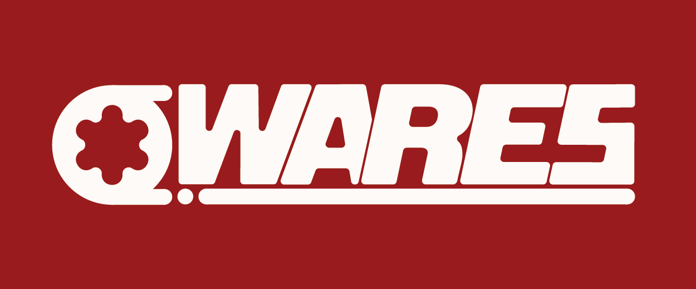
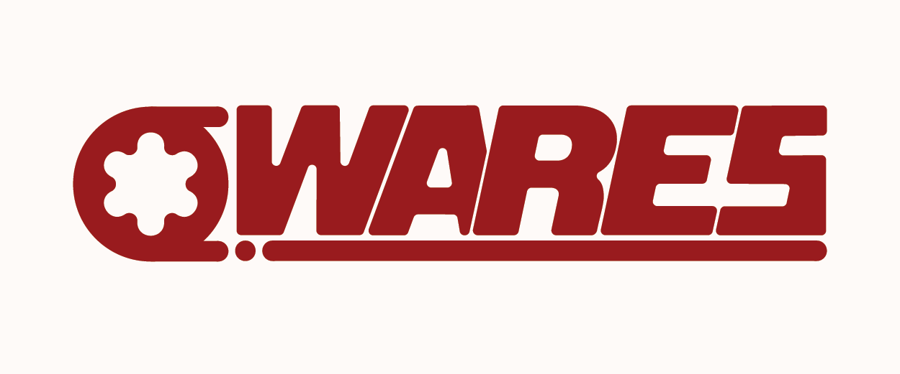
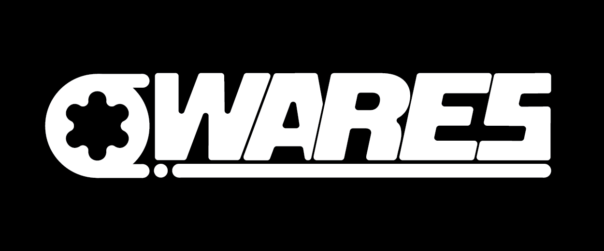
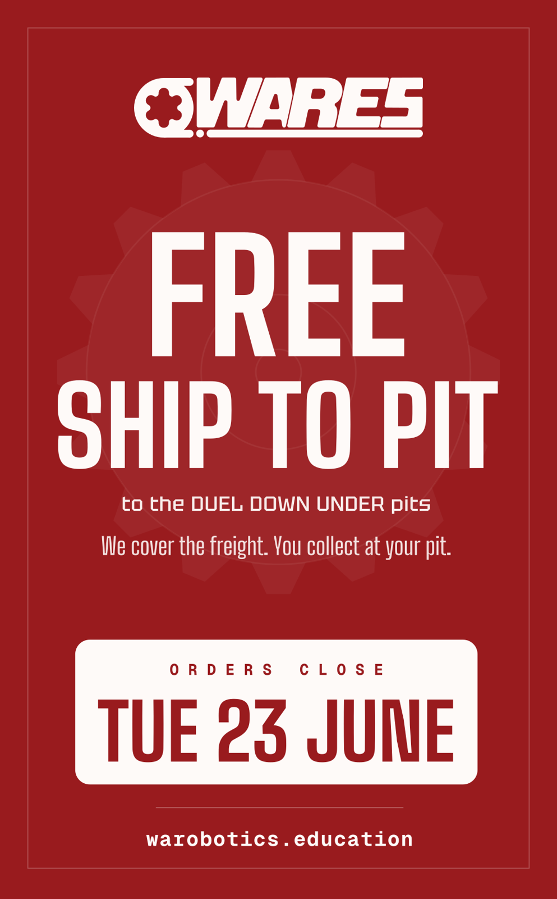
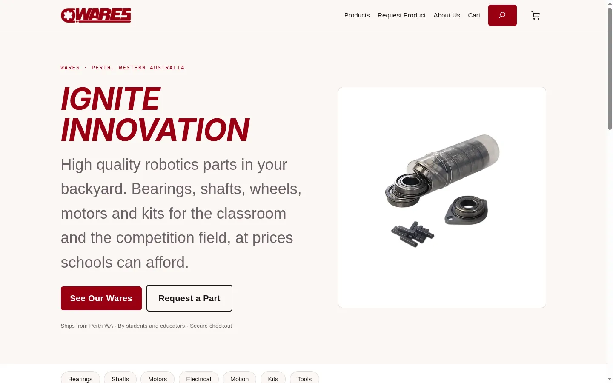
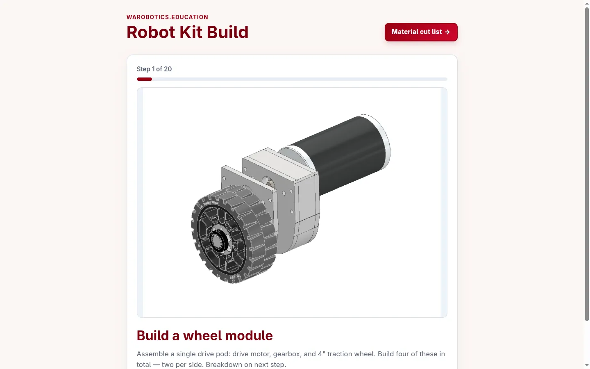

WARES
Brand identity for a robotics education supplier: built from scratch on a $0 budget, and designed so the business can machine its own logo into the products it sells.

The brief
WARES, West Australian Robotics Education Specialists, supplies and contracts robotics education across primary, secondary and tertiary settings. When the business started there was no brand at all: no logo, no colours, no type. The brief was to build the whole identity from scratch on a $0 budget, for digital use first.
That budget shaped every decision. No typeface licences, no stock assets, no agency tools. Every part of the identity had to be drawn by hand.
The identity
The mark looks like a flower. It is a spline profile, drawn from a WARES product. The shape had a second job beyond recognition. It was drawn so a CNC router or mill could cut it, which lets the business machine its own logo straight into product. The brand mark doubles as a manufacturing file.
The wordmark is hand-drawn. There is no typeface behind it; each letter was built as an SVG, referencing chunky lettering from old signs and logos. The weight is deliberate. WARES is an acronym, and the letterforms are heavy enough that nobody reads it as a word.
Colour came last, and through a process. Early versions of the logo stayed black and white to get the silhouette right before anything else. The silhouette was then made up in palettes drawn from Western Australia: red outback dirt, green and gold, yellow on blue like sunset over water. Red dirt won.


In the wild



Outcome
The identity now runs through everything WARES ships: the storefront, packaging, stickers, email signatures, and the logo machined into product. An identity designed for screens ended up living mostly in the physical world.
That shift is also the honest lesson. Print demand outgrew the digital-first assumption, and a red-on-white primary would have printed cheaper and cleaner than white-on-red. The mark and type have held up; the palette hierarchy is the one call worth revisiting.